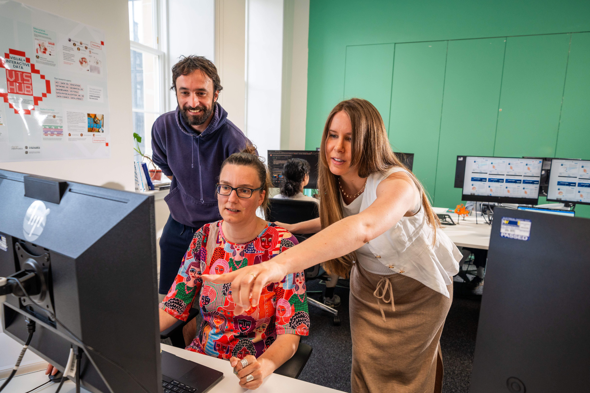

Analyse Text
Once you have preprocessed your corpus or text, you are ready to begin text analysis. Your research question will guide the type of text analysis you perform. That being said, generally, it is useful with any text analysis project to calculate corpus statistics such as:
- Total tokens
- Total sentences
- Total documents
- Average number of tokens per document
- Average number of sentences per document
- Shortest document
- Longest document
These statistics give people a sense of the size of your dataset.
Types of Text Analysis
There are many types of text analysis you can perform. The list below, though not exhaustive, lists some types of analysis you could consider, ordered from least to most complex.
- Concordances: study the context in which a particular word is used in your corpus.
- Frequency distributions: visualise the frequency with which particular words are used across your corpus.
- Lexical diversity: study the vocabulary choice of the author or authors of your documents.
- N-grams: find words that appear next to one another more often than they would be expected to be if randomly distributed.
- Named entity recognition: identify people, places, organisations, and other entities referred to by name in your documents.
- Sentiment analysis, also known as opinion mining: study the attitudes expressed in your documents, classifying subsets of your corpus as positive, neutral, or negative.
- Topic modelling: find common topics, or themes, in your documents.
- Word embeddings: visualise the relationships between words by projecting them onto a 2D space so you can study which words are strongly and weakly associated with one another, or, with an appropriate corpus of documents, how word meanings change over time.
Data visualisations are useful when conducting text analysis to study your data and to communicate your analysis to other people. Check out the Data Visualisation Pathway and Statistical Analysis Pathway for more information.
Where to find more information
Our Tutorials

UoE Resources

Self-Guided Learning
- Introduction to Word Embeddings
- Library Carpentry Text Analysis
- Text Mining with R
- Using Voyant Tools
- Using AntConc
- NLS Data Foundry Jupyter Notebooks
- Text Mining with R: A Tidy Approach
- Programming Historian: Counting Word Frequencies with Python
- Programming Historian: Keywords in Context Using N-grams with Python
- Programming Historian: Working with Text Files in Python
- Coursera: Introduction to Text Mining with R
- Coursera: Exploratory Data Analysis with Textual Data in R and Quanteda
- Coursera: Natural Language Processing Specialization
- An Introduction to Natural Language Processing
- Text Mining with R: A Tidy Approach